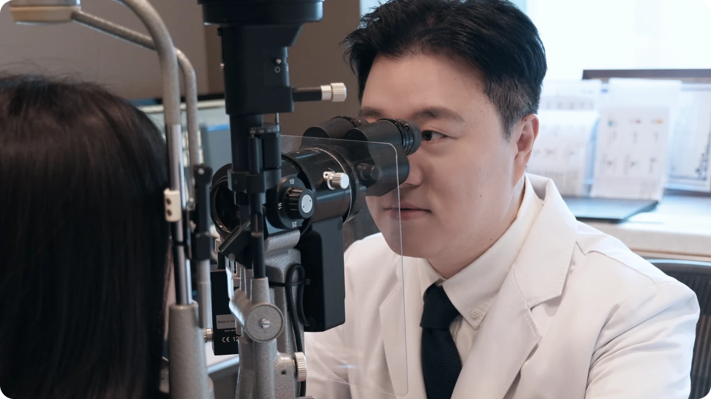
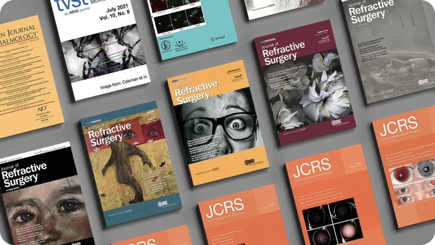
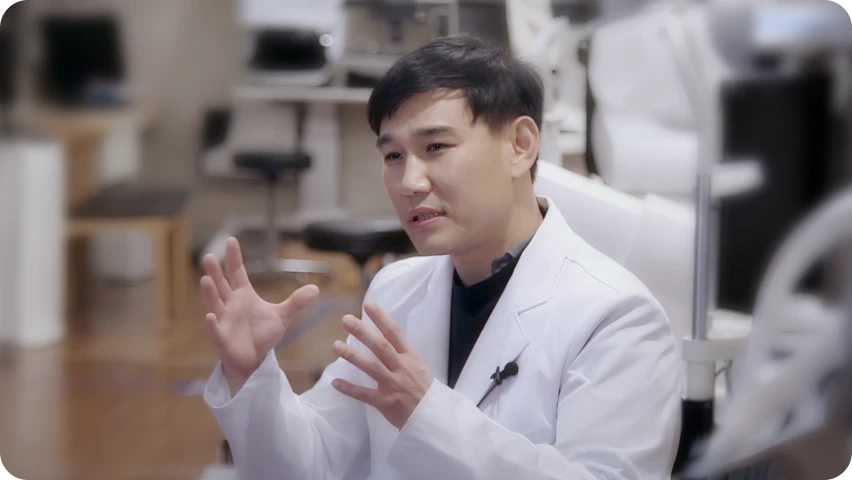
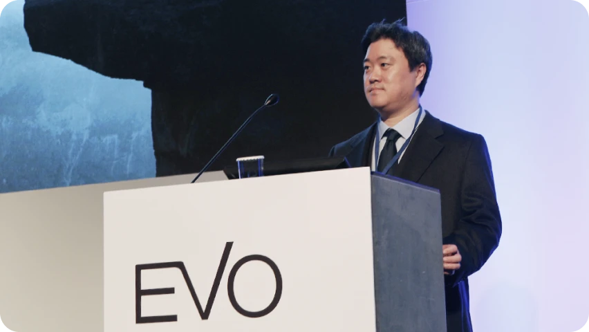
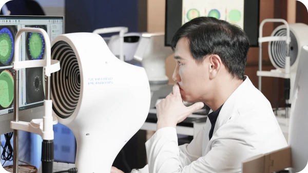
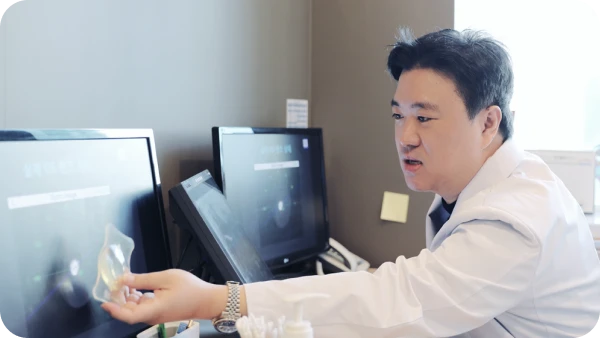
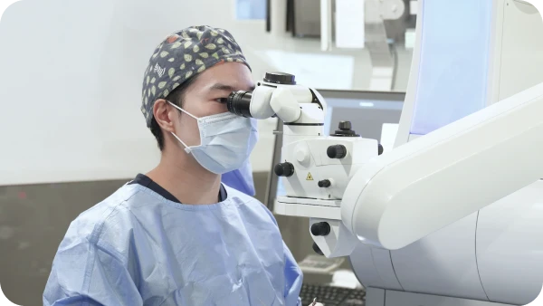
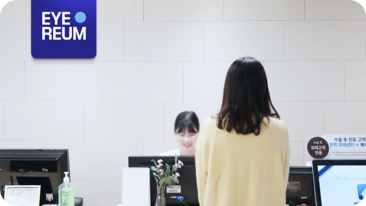

2. 필요하지 않으면 권하지 않습니다.
정밀검사 결과 수술이 적합하지 않거나, 다른 방법이 더 안전하다고 판단되면 수술을 권하지 않습니다.
무리한 권유를 하지 않는 것이 환자의 안전을 지키는 첫 번째 방식입니다.
아이리움은 수술 결과를 국제 학술지에 공개합니다. 공개한다는 것은 수술
다음 날이 아니라 몇 년 뒤까지 경과를 추적하고, 그 숫자를 전 세계
의사들에게 검증 받는다는 뜻입니다.
SCI 논문 60편 이상은 단순한 숫자가 아닙니다. 아이리움의 기준과 결과를 전세계의 전문가들이 검증하고 인정했다는 것을 뜻합니다.
정밀검사 결과 수술이 적합하지 않거나, 다른 방법이 더 안전하다고 판단되면 수술을 권하지 않습니다.
무리한 권유를 하지 않는 것이 환자의 안전을 지키는 첫 번째 방식입니다.
수술은 끝이 아니라 관리의 시작입니다. 수술 후 경과를 확인하고 장기적인 시력
변화와 눈 상태를 지속적으로 관리합니다.
해외 환자는 귀국 후에도 원격 관리를 이어갑니다.

수술 다음 날의 시력만이 아니라 장기적인 변화까지 확인합니다.
검증 가능한 데이터로 수술 기준을 세우고 더 나은 방법을 찾습니다.
“왜 이 수술이 맞는지”를 검사 결과와 근거로 설명합니다.

국제 안과 학술지
심사위원


안과 수술 후 장기적인 경과 확인을가장 중요한책임으로생각합니다.
정밀 시력검사

수술 설계

수술 진행

정기검진

함께 더 밝고, 더 선명하게 보는 기쁨을 사회와 나누는
아이리움의 약속입니다.